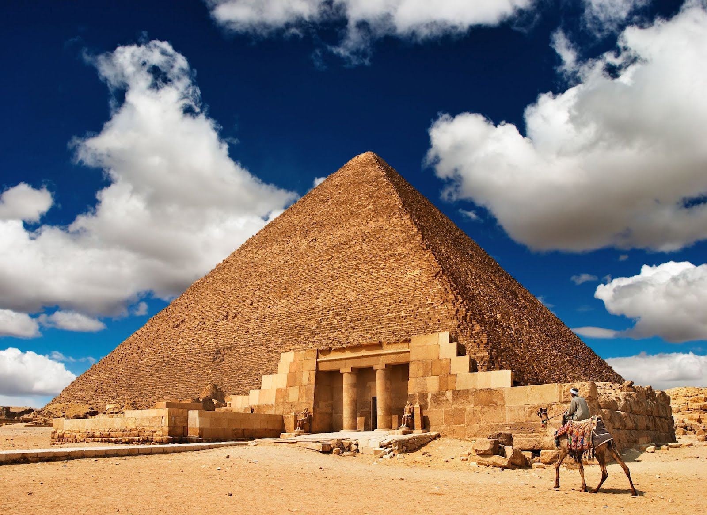

El Antiguo Egipto es la civilización que se desarrolló en torno al río Nilo, al noroeste de África. El área donde se asentó comenzaba en el delta del Nilo, a orillas del Mediterráneo, y alcanzaba hasta la primera catarata de ese río. Todo este territorio estaba dividido en dos partes: el Alto Egipto, al sur del país, y el Bajo Egipto, al norte. Aunque existen divergencias entre los expertos sobre la cronología, en líneas generales se considera que la civilización egipcia comenzó sobre el 3150 a.C. Su historia duró 3.000 años, hasta el 31 a.C., momento en que el Imperio romano conquistó sus tierras. Este largo periodo ha sido dividido en varias fases por los historiadores.
La sociedad egipcia era jerarquizada y la religión tenía una gran influencia. Esto último llevó a que los sacerdotes tuvieran un gran poder político, mientras que los faraones, monarcas del Antiguo Egipto, eran prácticamente dioses. Además de la importancia de la religión, el otro gran elemento definitorio de la civilización egipcia era el río Nilo. Gracias a sus crecidas, el país podía alimentarse, ya que permitía cultivar unas tierras rodeadas de desiertos.
Los faraones, como Tutankamón, Ramsés II y Cleopatra, dejaron un legado duradero en la historia. No solo construyeron monumentos y pirámides, sino que también establecieron el sistema de gobierno y las leyes que regían la vida en Egipto. La escritura jeroglífica fue otra de las grandes contribuciones egipcias al mundo, permitiendo que sus historias, conocimientos y creencias perduraran a través de los siglos.
La religión egipcia era politeísta, y cada aspecto de la vida cotidiana estaba vinculado a una deidad. Entre las más importantes se encontraban Ra, el dios del sol, y Osiris, el dios de la vida después de la muerte. Los egipcios creían en la vida eterna, lo que motivaba la construcción de tumbas y pirámides como el lugar de descanso de los faraones. A través de estos rituales, los egipcios buscaban asegurar la protección divina y la inmortalidad del alma.
La civilización egipcia tuvo lugar en el valle del Nilo, al noroeste del continente africano. Su extensión varió con el tiempo, ya que en la época de mayor esplendor alcanzó territorios al sur de la primera catarata y zonas alejadas del cauce del río. El país de Quimit. Los habitantes de la zona que atravesaba el río Nilo la llamaban Quimit. Este nombre significaba “tierra negra” y servía para distinguir la región de los desiertos de tierra roja. El elemento que más influyó en la formación de la civilización egipcia fue el Nilo. Sus aguas eran responsables de la fertilidad de las tierras cercanas. Además, una vez al año el río se desbordaba, aumentando la extensión de tierra cultivable. Aunque los límites variaron según la época, sus fronteras más habituales fueron el mar Mediterráneo por el norte, Nubia por el sur, el mar Rojo por el este y el desierto de Libia por el oeste. División territorial. La primera zona abarcaba desde la primera catarata del Nilo, donde actualmente se encuentra Asuán, hasta Menfis, donde el río comenzaba a formar el delta. El monarca del Alto Egipto vestía una corona blanca hasta que se produjo la unificación. Por su parte, el Bajo Egipto comprendía toda la región del delta del Nilo.
La Gran Pirámide de Guiza es el símbolo definitivo de Egipto y la última de las Siete Maravillas del Mundo. Se encuentra en la meseta de Guiza cerca de la moderna ciudad de El Cairo y fue construida a lo largo de 20 años durante el reinado del rey Kufu de la Dinastía IV (2589-2566 a.C., también conocido como Keops). Las pirámides de Giza son los monumentos más antiguos del mundo y formaron parte de las siete maravillas del mundo antiguo. La Gran Pirámide originalmente tenía 481 pies (147 metros) de altura y está formada por más de 2,3 millones de bloques de piedra caliza.
